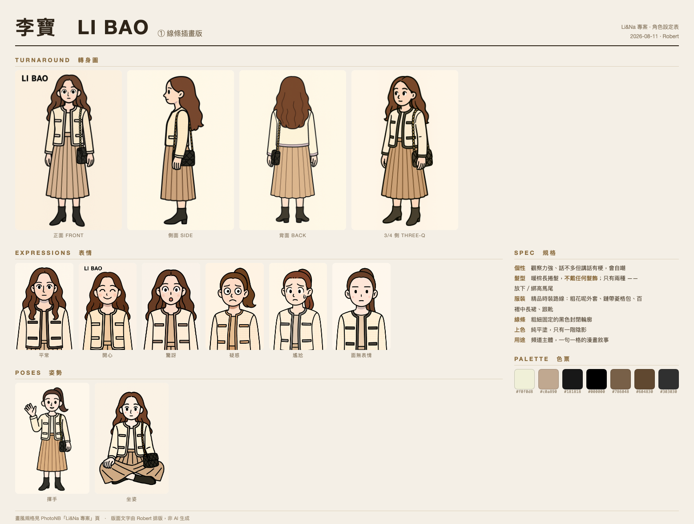
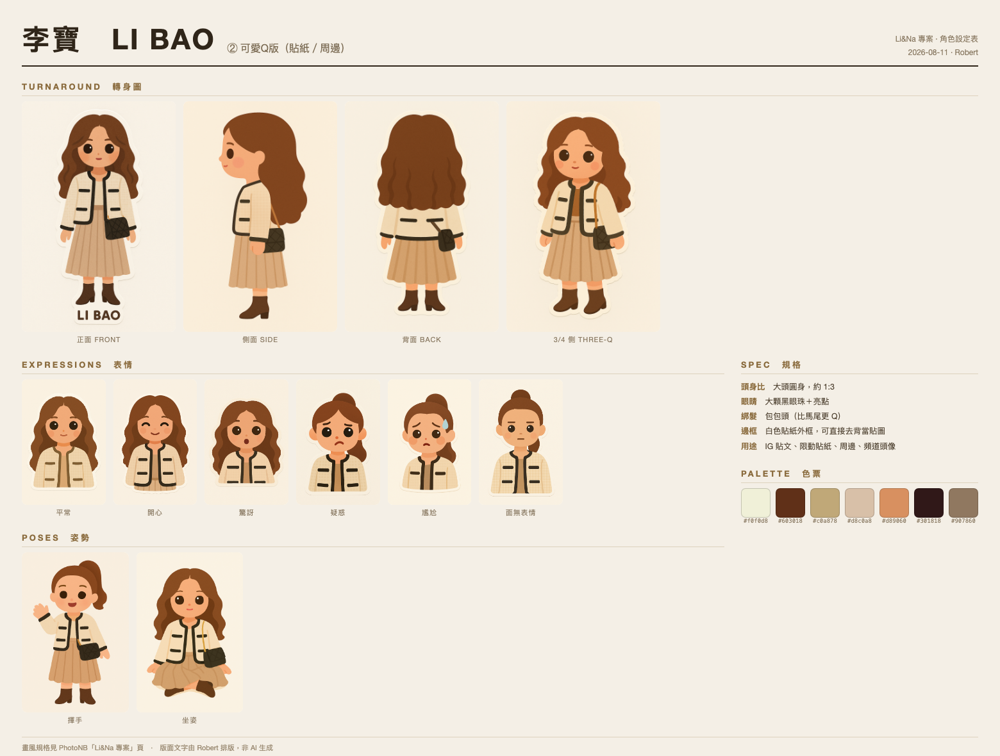
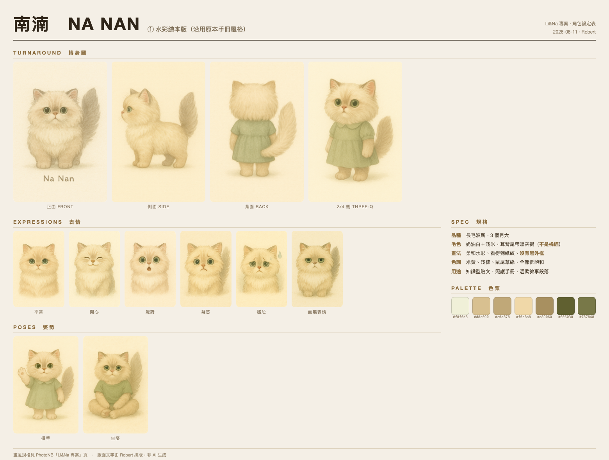
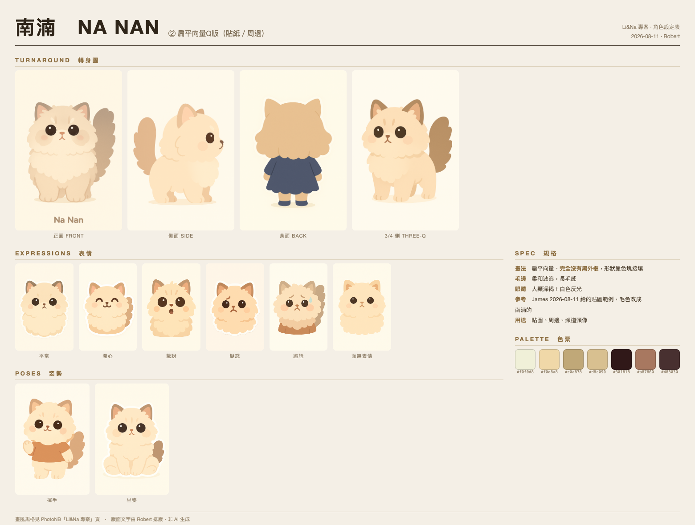
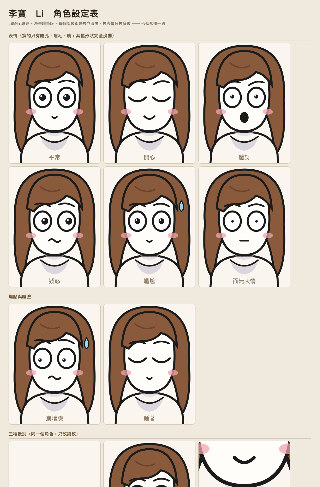
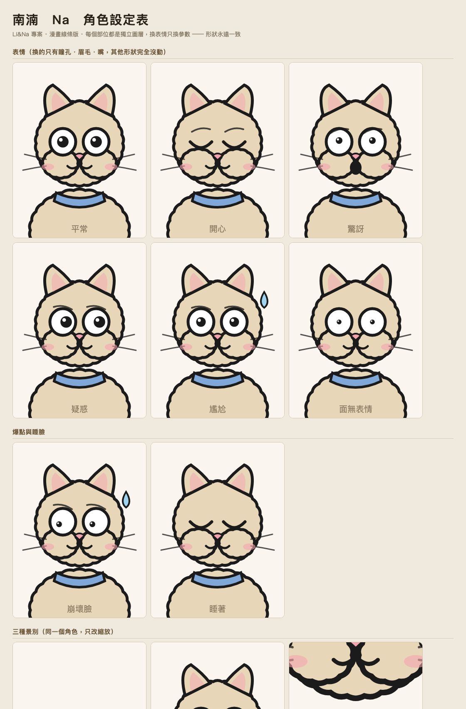

李寶（你既有的角色）＋ 南湳（家裡的貓）的生活分享頻道。
形式參考你丟的那支 IG Reel：漫畫線條、一句一格、語音驅動。
James 2026-08-11 立案
拿下面這段去生圖，生完挑一張定稿，之後所有畫面都以它為準。
Create a character reference sheet in flat 2D webtoon style, on an off-white background.
Character: {李寶 / 南湳的外型描述}
Style rules (strict):
- bold black closed outlines of uniform thickness, no line-weight variation
- completely flat fills, NO gradients, NO texture
- exactly ONE shadow tone (a pale grey-lavender), used only under the chin and in cloth folds
- skin left almost uncolored, with two small blush dots
- huge round eyes with black dot pupils and lots of white, wide-set
- tiny mouth, nose usually omitted
- limited palette: pink hair / warm blonde / off-white / pale grey-lavender / one accent
Sheet layout:
Row 1 — front view, 3/4 view, side view, back view (full body)
Row 2 — head close-ups: neutral, happy, surprised, confused, embarrassed (sweat drop), deadpan
Row 3 — one "broken face" comedic reaction, plus 3 common hand gestures
Row 4 — the character at three camera distances: full shot, medium shot, extreme close-up filling the frame
No background, no text labels, no shading beyond the single flat shadow tone.
李寶三組、南湳兩組。下面四張是 AI 生圖版（造型定裝用），最後一組是我用向量畫的（量產用）。 版面文字全部由我排，沒讓 AI 畫字。




工具 tools/lina_char.py。每一格都是同一組形狀，30 格永遠一致、不用再付錢。
定裝定案後我會照上面 AI 版的造型把參數調過去。


transcribe 出逐字稿與時間碼，一句 ＝ 一格 ✅ 已有title_layer / narrative_tag 出字層 ✅ 已有👉 七步裡面只有第 4 步是新的，其餘都能沿用。
2026-08-03 那批 4K120 O-Log2 影片就是南湳（沙發、花花抱枕、地板玩耍）。 真貓片段可以跟漫畫混剪 —— 漫畫講故事、真貓當「證據」，這種混搭在寵物頻道很吃香。
📁 2026-08-03 貓咪 O-Log2 測拍/（已歸檔、已解碼、FCP library 已建）